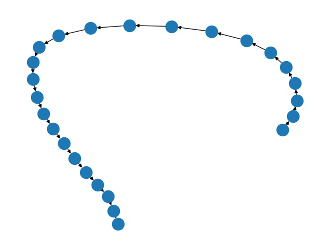

retworkx.visualization.mpl_draw¶
- mpl_draw(graph, pos=None, ax=None, arrows=True, with_labels=False, **kwds)[source]¶
Draw a graph with Matplotlib.
Note
Matplotlib is an optional dependency and will not be installed with retworkx by default. If you intend to use this function make sure that you install matplotlib with either
pip install matplotliborpip install 'retworkx[mpl]'- Parameters:
pos (dict) – An optional dictionary (or a
Pos2DMappingobject) with nodes as keys and positions as values. If not specified a spring layout positioning will be computed. See layout_functions for functions that compute node positions.ax (matplotlib.Axes) – An optional Matplotlib Axes object to draw the graph in.
arrows (bool) – For
PyDiGraphobjects ifTruedraw arrowheads. (defaults toTrue) Note, that the Arrows will be the same color as edges.arrowstyle (str) – An optional string for directed graphs to choose the style of the arrowsheads. See
matplotlib.patches.ArrowStylefor more options. By default the value is set to'-\|>'.arrow_size (int) – For directed graphs, choose the size of the arrow head’s length and width. See
matplotlib.patches.FancyArrowPatchattribute and constructor kwargmutation_scalefor more info. Defaults to 10.with_labels (bool) – Set to
Trueto draw labels on the nodes. Edge labels will only be drawn if theedge_labelsparameter is set to a function. Defaults toFalse.node_list (list) – An optional list of node indices in the graph to draw. If not specified all nodes will be drawn.
edge_list (list) – An option list of edges in the graph to draw. If not specified all edges will be drawn
node_size (int|list) – Optional size of nodes. If an array is specified it must be the same length as node_list. Defaults to 300
node_color – Optional node color. Can be a single color or a sequence of colors with the same length as node_list. Color can be string or rgb (or rgba) tuple of floats from 0-1. If numeric values are specified they will be mapped to colors using the
cmapandvmin,``vmax`` parameters. Seematplotlib.scatter()for more details. Defaults to'#1f78b4')node_shape (str) – The optional shape node. The specification is the same as the
matplotlib.pyplot.scatter()function’smarkerkwarg, valid options are one of['s', 'o', '^', '>', 'v', '<', 'd', 'p', 'h', '8']. Defaults to'o'alpha (float) – Optional value for node and edge transparency
cmap (matplotlib.colors.Colormap) – An optional Matplotlib colormap object for mapping intensities of nodes
vmin (float) – Optional minimum value for node colormap scaling
vmax (float) – Optional minimum value for node colormap scaling
linewidths (float|sequence) – An optional line width for symbol borders. If a sequence is specified it must be the same length as node_list. Defaults to 1.0
width (float|sequence) – An optional width to use for edges. Can either be a float or sequence of floats. If a sequence is specified it must be the same length as node_list. Defaults to 1.0
edge_color (str|sequence) – color or array of colors (default=’k’) Edge color. Can be a single color or a sequence of colors with the same length as edge_list. Color can be string or rgb (or rgba) tuple of floats from 0-1. If numeric values are specified they will be mapped to colors using the
edge_cmapandedge_vmin,edge_vmaxparameters.edge_cmap (matplotlib.colors.Colormap) – An optional Matplotlib colormap for mapping intensities of edges.
edge_vmin (float) – Optional minimum value for edge colormap scaling
edge_vmax (float) – Optional maximum value for node colormap scaling
style (str) – An optional string to specify the edge line style. For example,
'-','--','-.',':'or words like'solid'or'dashed'. See thematplotlib.patches.FancyArrowPatchattribute and kwarglinestylefor more details. Defaults to'solid'.labels (func) –
An optional callback function that will be passed a node payload and return a string label for the node. For example:
labels=str
could be used to just return a string cast of the node’s data payload. Or something like:
labels=lambda node: node['label']
could be used if the node payloads are dictionaries.
edge_labels (func) –
An optional callback function that will be passed an edge payload and return a string label for the edge. For example:
edge_labels=str
could be used to just return a string cast of the edge’s data payload. Or something like:
edge_labels=lambda edge: edge['label']
could be used if the edge payloads are dictionaries. If this is set edge labels will be drawn in the visualization.
font_size (int) – An optional fontsize to use for text labels, By default a value of 12 is used for nodes and 10 for edges.
font_color (str) – An optional font color for strings. By default
'k'(ie black) is set.font_weight (str) – An optional string used to specify the font weight. By default a value of
'normal'is used.font_family (str) – An optional font family to use for strings. By default
'sans-serif'is used.label (str) – An optional string label to use for the graph legend.
connectionstyle (str) – An optional value used to create a curved arc of rounding radius rad. For example,
connectionstyle='arc3,rad=0.2'. Seematplotlib.patches.ConnectionStyleandmatplotlib.patches.FancyArrowPatchfor more info. By default this is set to"arc3".
- Returns:
A matplotlib figure for the visualization if not running with an interactive backend (like in jupyter) or if
axis not set.- Return type:
For Example:
import matplotlib.pyplot as plt import retworkx from retworkx.visualization import mpl_draw G = retworkx.generators.directed_path_graph(25) mpl_draw(G) plt.draw()
